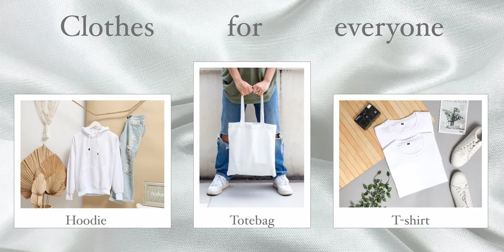

UX
I tema 3 "Grundlæggende UX", har vi arbejdet i tre mindre temaer.
Koncept, research og dataindsamling
Vi arbejdede med fire firskellige research metoder. "Desk researsh", "Interview", "Observation" og "Survey".
Vi startede med et koncept, som vi lavede en masse research ud fra. For at finde frem til vores endelige koncept, lavede vi en masse dataindsamling. Vi samlede alle vores indsigter for at få dem samlet et sted. Grupperede dem for at finde nogle fællesnævner og udvalgte dem vi kunne bruge til vores videre proces. Da vi havde fundet frem til vores endelige koncept kiggede vi ind og fandt ud af hvem der var den endelige afsender og målgruppe. Og hvad de endelige produkter skulle være og om USP'en havde ændret sig.
Prototype, copy og fotos
Da vi skulle lave prototyper brugte vi forskellige metoder. Først brugte vi "Low fidelity", hvor vi skitserede vores idé i forhold til hvad vi havde lært om konventioner og designpatterns. Efterfølgende lavede vi en "High fidelity prototype, som var mere visuelt færdigt
Vi arbejde med copy, hvor vi lærte hvordan man skulle skrive tekster der fik folk til at handle eller udføre en handling. Vi arbejdede også med micro copy, som motiverer eller instuere brugeren til at udføre en handling eller giver feedback efter brugeren har udført en handling.
Test og pitch
I slutningen af temaet skulle vores project testes af medstuderende og pitches.
Link til opgave 